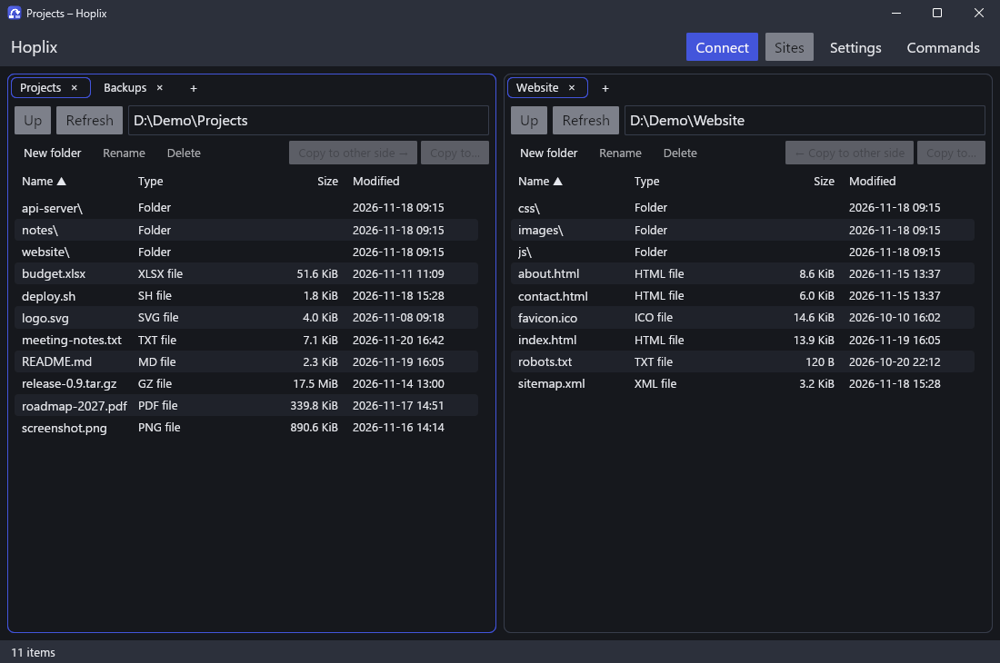

Hoplix
Hoplix is a file transfer client for Windows and Linux, written in Rust with iced. It connects to SFTP, FTP, FTPS and WebDAV servers and to Amazon S3 or S3-compatible storage, transfers files and whole folders, compares and synchronises folders and opens files in external programs. A command-line tool, hoplix-cli, uses the same core.
Work in progress: Hoplix is at an early stage of development. Features, settings files and the user interface may still change.
Feedback and bug reports are welcome as issues. Not affiliated with or endorsed by Microsoft, the GNOME project, KDE, Nextcloud or ownCloud. Windows is a trademark of the Microsoft group of companies.


Features
- SFTP, FTP, FTPS (explicit and implicit TLS), WebDAV and S3 (Amazon S3 and compatible), with SSH agent, jump host and SOCKS5 or HTTP proxy
- Site manager with folders, export and import; passwords in the system keyring or a file encrypted with a master password
- Transfer queue with resume, parallel and speed limits, a history and optional checksum checks
- Compare and synchronise folders, locally and on servers
- Edit files from servers in an external editor and upload the saved changes
- Preview of text files next to the file list
- Modern layout with tabs or classic layout with two panes
- Light and dark mode, English and German
hoplix-clifor scripts, with the same core and the saved sites- No telemetry; the only network access apart from your servers is an optional update check (see Privacy)
Installation
Download one of the files from Releases:
- Installer
Hoplix-<version>-windows-x64-setup.exe– installs Hoplix andhoplix-clifor the current user (default, no administrator rights, to%LOCALAPPDATA%\Programs\Hoplix) or for all users (toC:\Program Files\Hoplix, asks for administrator rights) and adds a Start menu entry and optionally a desktop shortcut. It can be removed under Settings → Apps. - Portable for Windows
Hoplix-<version>-windows-x64-portable.zip– extract it to any folder, for example on a USB stick, and starthoplix.exe. Keep thelangfolder next to the program. The ZIP contains the filehoplix.portable: while it is next to the program, Hoplix keeps everything in theconfigfolder beside it (see Portable mode below). - Debian, Ubuntu and derivatives
hoplix_<version>_amd64.deb– install it withsudo apt install ./hoplix_<version>_amd64.deb. It installshoplixandhoplix-clito/usr/bin, the language files to/usr/share/hoplix/langand a menu entry with icon. Remove it withsudo apt remove hoplix. - Fedora, openSUSE and other RPM-based systems
hoplix-<version>-1.x86_64.rpm– install it withsudo dnf install ./hoplix-<version>-1.x86_64.rpm(orsudo zypper install …), remove it withsudo dnf remove hoplix. - Portable for Linux
Hoplix-<version>-linux-x64.tar.gz– extract it and starthoplix. Keep thelangfolder next to the program.
The Linux programs need the C library (glibc 2.39 or newer, as in Debian 13 and Ubuntu 24.04) and, for the window, the libraries for X11 and Wayland (libxkbcommon, libwayland-client, libX11, libX11-xcb, libXcursor, libXi, libxkbcommon-x11); the packages pull them in. EGL (libegl1, libwayland-egl1) is recommended for drawing with the graphics card; without it, Hoplix draws in software.
Portable mode: if a file named hoplix.portable is next to hoplix.exe or hoplix (and hoplix-cli), all configuration files – settings, sites, open tabs, trusted keys and certificates, the encrypted password file, recent connections, bookmarks, unfinished transfers and the history – are kept in the folder config next to the programs instead of your user profile. Delete the file to go back to the user profile; an existing HOPLIX_CONFIG_DIR environment variable still wins. In portable mode, new installations keep saved passwords in the file encrypted with a master password, because entries in the Windows Credential Manager or the system keyring would stay on the computer; you can still choose the keyring in Settings → Saved passwords. Files opened for editing are still copied to the temporary folder of the computer. The installer and the Linux packages do not include the file.
Versions 0.x are published as pre-releases. The programs are not signed, so SmartScreen may warn on the first start: "More info" → "Run anyway". Each file has a .sha256 file to verify the download, and the release notes link a VirusTotal scan. Changes are listed in the changelog.
Installer parameters
The installer accepts the usual Inno Setup parameters, e.g. for a silent installation:
| Parameter | Effect |
|---|---|
/CURRENTUSER | Install for the current user only (default) |
/ALLUSERS | Install for all users (asks for administrator rights) |
/DIR="C:\Path" | Installation folder |
/SILENT, /VERYSILENT | Without wizard (with or without progress window) |
/SUPPRESSMSGBOXES | No message boxes in silent mode |
/TASKS="desktopicon" | Add a desktop shortcut; without the parameter there is none |
/NOICONS | No Start menu entry |
/LOG="C:\Path\setup.log" | Write a log file |
Example: Hoplix-0.2.0-windows-x64-setup.exe /VERYSILENT /SUPPRESSMSGBOXES /ALLUSERS /TASKS="desktopicon"
Settings such as the language, the layout or the editor are stored per user and are not set by the installer. Uninstalling removes the program and its shortcuts but keeps your settings, sites and trusted server keys in %APPDATA%\Hoplix and the passwords saved in the Windows Credential Manager.
Usage
- Every location opens in its own tab. Use + for a new tab and × to close one.
- Double-click a folder to open it, use Up to go to the parent folder, or type a path and press Enter.
- Click a column header to sort by it; click it again to reverse the order. The columns are name, type, size and the date of the last change in your local time. Settings → General adds the optional columns Permissions (for example
rwxr-xr-x) and Owner, filled from the listing of SFTP, FTP with Unix-style listings and local folders on Linux; on narrow lists they are hidden first. - Connect opens a connection in a new tab. Protocols: SFTP (port 22), FTP (21, unencrypted), FTPS with explicit TLS (21), FTPS with implicit TLS (990), WebDAV over HTTPS (443) and WebDAV over HTTP (80, unencrypted). SFTP signs in with a password, a private key file (OpenSSH format, optionally with a passphrase) or the SSH agent, FTP, FTPS and WebDAV with a password. For WebDAV, Base path is the server folder that Hoplix shows as
/, for example/remote.php/dav/files/<user>/on Nextcloud; when it is empty, Hoplix starts at the root of the server. With SSH agent, Hoplix uses the keys of the running agent (on Windows the OpenSSH agent and Pageant, on Linux the agent inSSH_AUTH_SOCK); if no agent runs, the agent holds no keys or the server accepts none of them, the connect page says so. Save as site turns the entered connection into a saved site. - S3 (S3 (Amazon S3 and compatible) on the connect page and in the site editor) connects to a bucket on Amazon S3 or an S3-compatible server such as MinIO, Ceph or Garage. Endpoint is the server's host name (empty for Amazon S3, which means
s3.<region>.amazonaws.com) with the port next to it (default 443, with HTTP 80); Access key ID and Secret access key sign in, Bucket and Region (defaultus-east-1) select the bucket. Path-style addresses puts the bucket into the path (host/bucket/key) instead of the host name (bucket.host/key); most local servers need it, and Hoplix uses it by itself for IP addresses,localhostand bucket names with dots. HTTPS is the default; Unencrypted HTTP is meant for local test servers and shows a warning. Folders are key prefixes: a folder exists as soon as an object key contains it, New folder creates an empty objectfolder/, and deleting a folder deletes every object below it (after the usual confirmation). Renaming copies each object and then deletes the original, so it is not atomic: if it is interrupted, some objects exist under both names. Modification times come from the server (LastModified) and cannot be changed, permissions do not exist. Files up to 8 MiB are uploaded in one request, larger files as a multipart upload in parts of 8 MiB (larger parts for very large files). A cancelled or failed upload is aborted on the server; a paused upload stores what was transferred so far, and Resume continues by copying that part on the server and uploading the rest. Checksums compare the MD5 ETag of files uploaded in one request, otherwise only the size. Hoplix is not affiliated with Amazon; Amazon S3 is a trademark of Amazon.com, Inc. or its affiliates. - Jump host and proxy (click to expand on the connect page; in the site editor under Advanced settings → Connection): Connect through an SSH jump host (SFTP only) takes the jump host's address, port (default 22), user name and sign-in (password, key file with passphrase or SSH agent); Hoplix connects to the jump host first and reaches the server through it. Proxy is No proxy, SOCKS5 (default port 1080) or HTTP CONNECT (default port 8080), with an optional user name and password; it works for SFTP, FTP and FTPS. FTP and FTPS work through a proxy in passive mode only, so the site editor does not save a site with Active transfer mode and a proxy. For a saved site, Save password below the jump host and proxy fields keeps those passwords like the site password. Errors name the jump host or proxy that failed.
- The first time you connect to an SFTP server, Hoplix shows its key fingerprint. Choose Trust once or Always trust; a changed key is refused with a warning. With a jump host, Hoplix asks for the jump host's key first (Unknown jump host) and then for the server's key.
- WebDAV cannot continue an interrupted upload, so Hoplix uploads such a file again from the start; downloads continue where they stopped. WebDAV offers no checksums, so Verify after transfer compares the sizes. The modification time of uploaded files is kept on Nextcloud and ownCloud only; other servers set the time of the upload.
- FTPS and WebDAV (HTTPS) certificates are checked against the certificate authorities trusted by your system. If a certificate is not trusted (for example self-signed), Hoplix shows its SHA-256 fingerprint and asks the same way; a changed, untrusted certificate is refused.
- For plain FTP, the connect page warns that passwords and files are sent unencrypted.
- New folder, Rename and Delete work in local and remote tabs. Deleting asks first and removes folders with everything in them.
- Select several entries with Ctrl+click (toggle) and Shift+click (range).
- Filter (Ctrl+F) above the list shows only the names that contain the typed text, ignoring case; with
*(any text) or?(one character) the whole name must match the pattern, for example*.logorreport-??.pdf. The list updates while you type, the status bar shows x of y items, and selecting, Ctrl+A and the arrow keys only reach the visible entries. Esc or × clears the filter. Each tab has its own filter; it is cleared when the tab opens another folder, so a new folder always shows everything. - ← and → (Alt+← and Alt+→, or the back and forward buttons of the mouse) go back and forward through the folders visited in the tab. Each tab keeps up to 50 steps; opening a folder after going back drops the forward steps.
- Bookmarks next to the path field: Bookmark this folder (Ctrl+B) remembers the current folder, choosing a bookmark opens it, and Edit bookmarks… renames or removes them. Local tabs share one list; tabs of a saved site use the bookmarks of that site, which travel with it in exported site lists. ★ shows that the current folder is bookmarked. Connections without a saved site have no bookmarks. The command palette offers Go to bookmark … for the bookmarks of the current tab.
- Search in subfolders… (Ctrl+Shift+F, also in the command palette) searches the current folder and all folders inside it, locally and on servers, through the tab's own connection. The name pattern works like the filter (empty: everything); Folder levels limits the depth (1 = only this folder, empty: all levels). Results appear while the search runs, with name, folder, size and modification time, in place of the file list; Stop ends the search, Close results returns to the folder. A double-click on a result opens its folder and selects it. Folders that cannot be read are skipped and counted; at most 10,000 results are shown. Links to folders are not followed. A selected result can be copied like a file of the list: drag it onto another tab or pane, or use Copy to other side and Copy to…; it is copied from its own folder, and conflicts are asked as usual.
- Properties (Alt+Enter, command palette) shows name, path, type, size and modification time of the selected entry, or of the current folder when nothing is selected. For folders, Calculate size adds up everything inside (with Stop). On servers and on Linux it shows the permissions as letters and digits and, if the server tells, owner and group (SFTP and FTP servers often only give numbers). Change them with the digits (for example
644) or the checkboxes and Apply: SFTP sets them directly, FTP withSITE CHMOD(if the server refuses, its reply is shown), Linux and macOS locally. For folders, Also apply to everything inside the folder changes the contents too, limited to Files or Folders if you like; links are left alone. On Windows the dialog shows Read-only and Hidden instead and changes nothing. - Open and edit files: a double-click or Enter opens a file with the default program of the system, Edit (F4) with the editor set in Settings → Editor (empty: the default program). The editor can be a program or a command line with arguments, for example
code --wait %1or"C:\Program Files\Notepad++\notepad++.exe" -multiInst %1:%1stands for the file, without it the file is added as the last argument; put paths and arguments with spaces in double quotes. Hoplix starts the program directly, not through a shell, and always passes the file name as a separate argument. Files from a server are first downloaded to a private temporary folder. Hoplix checks the copy every second; when it was saved, the Edited files list at the bottom offers Upload (replaces the file on the server through the transfer queue) or Ignore, or uploads it right away with Settings → Upload changes automatically. Watching ends with Stop watching or when the tab is closed; the copies are deleted when Hoplix closes. - Preview (F3, the Preview (F3) button or the command palette) opens a pane to the right of the file list that shows the selected file: name, type, size and modification time, and for text files the first 256 KiB in a monospaced font with the number of lines, the encoding (UTF-8, UTF-16 with byte order mark, otherwise Windows-1252) and a note when the file is longer. Text is recognised by its content, not only by its extension; known binary types (images, archives, documents, programs) and other binary files show No preview. Images are not shown yet. Files on a server are only read while the pane is open and after the selection has rested for 0.3 seconds; changing the selection cancels a running read. Files larger than Settings → Preview → Load from servers (default: files up to 2 MiB) get a Load preview button instead. Drag the left edge of the pane to change its width; Hoplix remembers whether it is open and how wide it is.
- Transfers: drag the selection onto another tab or the other pane and release it there, use Copy to… to pick a target tab, or, in the classic layout, Copy to other side. Files and whole folders go to the folder currently open in the target, between any two places: local to server (upload), server to local (download) or server to server. Several transfers run at the same time (Settings → Transfers → Parallel transfers, 1 to 8, default 2); Parallel downloads and Parallel uploads cap each direction on its own (default: same as parallel transfers). Download limit and Upload limit (KiB/s or MiB/s, empty or 0 for no limit) are shared by all running transfers of that direction. A copy between two servers counts as a download and an upload: it takes a place in both directions and both speed limits apply to it. Changes apply right away; when a parallel limit is lowered, running transfers finish first.
- Dropping files from the system: drag files and folders from Explorer, Finder or the file manager of your desktop onto Hoplix to copy them into the folder open there: onto a server tab as an upload, onto a local tab as a local copy, through the transfer queue with the same conflict questions as other transfers. The highlighted pane or tab shows where they go, and the status bar names the folder. Several files dropped at once go to the same place. The system does not tell Hoplix where the mouse is while it drags, so the target is the pane or tab the mouse was last over in Hoplix, otherwise the focused pane.
- Copy path (Ctrl+Shift+C, command palette) copies the full paths of the selected entries to the clipboard, one per line, or the path of the current folder when nothing is selected. Local paths are copied as they are, server paths as addresses like
sftp://user@example.com/var/www/index.html(withftp://,ftpes://orftps://for FTP and FTPS,s3://bucket/keyfor S3, the port when it is not the default, and special characters percent-encoded). Passwords are never part of them. - The Transfers panel at the bottom shows each transfer with progress, speed and remaining time; it can be collapsed to a one-line summary. Pause, resume, cancel, retry and remove single transfers or all at once. Paused, cancelled and failed transfers continue where they stopped. When the connection drops, Hoplix retries and resumes the file, by default three times after 1, 2 and 4 seconds (Settings → Connections → Retries, 0 to 10, and First retry after, 1 to 60 seconds; each further wait is twice as long).
- When a file already exists, Hoplix asks: overwrite, resume (if the existing file is smaller), keep both (
name (1).ext) or skip, optionally for all further conflicts. The panel sets a fixed answer instead of asking. The target folder refreshes when a transfer is done. - Unfinished transfers survive a restart (Settings → Transfers → Restore unfinished transfers, on by default): waiting, paused, failed and running transfers come back paused at the next start. Transfers whose server is not connected yet are grouped under Waiting for a connection to … with a Connect button: for a saved site it connects like the site does and then continues the transfers; for a connection without a site it opens the connect page filled in with the server, port, user name and sign-in method, so you only enter the password. A file that was only partly copied continues at the size it already has. Connecting to the server in any other way also links the waiting transfers, which you can then resume.
- History: the History tab of the Transfers panel lists finished transfers with time, direction, source → target, size, duration, average speed, result (done, skipped, failed with the error, cancelled) and the checksum result. Show filters by result, Clear empties the list, Copy puts the shown entries on the clipboard as text, and Export CSV or Export text writes them to the file in the Export to field. Hoplix keeps the last 500 entries (Settings → Transfers → Entries to keep, 100 to 10,000); Keep a transfer history switches logging off.
- Checksums (Settings → Transfers → Verify after transfer: Off or When the server supports it, the default): after each file Hoplix compares the copy with the original and shows the result in the panel and the history, for example SHA-256 verified or size checked. A copy that does not match fails with checksum mismatch; Retry copies that file again from the start.
- Compare (Ctrl+D) marks the differences between the two panes, or in the modern layout between the current tab and the one chosen under Compare with…:
+only here,»newer here,«older here,≠same time but different size,!a file on one side and a folder on the other,•a folder whose contents differ (with Include subfolders). Times within 2 seconds count as equal; times from FTP listings that only show minutes or days are compared at that precision. Only differences hides equal entries; Ctrl+A and the arrow keys then only reach the visible ones. The comparison follows the active tab: switching to another tab, opening or closing one compares the newly active tab instead; switching to the other compared tab keeps the comparison, and it ends when no second tab is left. - Synchronise… (Ctrl+Shift+D) copies between the two compared folders: left to right, right to left, or both ways (the newer file wins; files that differ only in size are skipped). Update copies new and newer files, Mirror also replaces newer files in the target and can delete files that are missing on the source. Options: include subfolders, compare the size only, skip hidden files (names starting with a dot), exclude patterns with
*and?(ignoring case, separated by;or,; a pattern with/matches the path inside the folder). Before starting, the dialog shows how many files are uploaded, downloaded or copied, folders created and files deleted, the total size and a preview list. Deletions need the extra confirmation Yes, delete them. The files go through the transfer queue and keep their modification time where the server allows it. - Sites keeps your servers, sorted into folders that can be nested. Create, edit, duplicate and delete sites and folders; the Folder field moves a site. Each site stores protocol, server, port, user name, sign-in method, key file, jump host and proxy, the remote and local folder to open, and notes. Deleting a site also deletes its saved passwords, including those for the jump host and the proxy. Connect or a double-click opens the site in a new tab named after it; a local folder opens next to it (in the other pane in the classic layout).
- Advanced settings in the site editor (click to expand; (changed) marks a site that uses other values than the defaults) tune the connection of one site. Connection timeout (default 20 seconds) limits how long connecting may take. Keep-alive interval keeps an idle connection open: SFTP sends an SSH keep-alive (default every 30 seconds), FTP and FTPS send
NOOP(default off). For FTP and FTPS, Transfer mode is Passive (default) or Active, where the server connects back to your computer, which firewalls and routers often block. Connect to the server's own address for passive mode (on by default) ignores the address in the server's PASV reply and uses the address Hoplix is connected to, which helps with servers behind NAT; when it is off, Hoplix uses PASV and the reported address. File name encoding is UTF-8 (default) or Windows-1252/Latin-1 for older servers; names that cannot be written in Windows-1252 are refused with a message. Parallel transfers limits how many transfers with this site run at the same time (empty: only the limits in the settings apply). The limit counts all tabs connected to the site and applies in addition to the overall and per-direction limits; a copy between two sites respects both. Waiting transfers show Waiting: this site allows n at a time. - Export… and Import… on the Sites page move sites between computers. Export saves all sites, the selected folder or the selected site to one file (default:
hoplix-sites.hoplix-sitesin your Documents folder; type another path in the dialog). Without Include saved passwords the file is plain text and contains no passwords. With it, type a password for the file twice; the whole file is then encrypted with it. Import reads such a file, asks for its password if it is encrypted and adds the sites to a new folder Imported <date> (or a folder you choose, or the top level). Imported sites get new ids, existing sites stay unchanged, and a name that is already taken in the target folder gets a number, for example Web (2). Imported passwords go to the current password store (system keyring or the unlocked master password file). A summary shows how many sites and passwords were imported. Hoplix uses its own path dialog instead of the system file dialog, which would need an extra dependency. - Save password (or Save passphrase for key files) keeps the secret of a site. Where it is kept is chosen in Settings → Saved passwords: in the Windows Credential Manager or the system keyring on Linux (default), or in a file encrypted with a master password that you enter once per session. Switching moves all saved passwords; Change master password re-encrypts them.
- Settings is grouped into sections: General (light, dark or the system appearance, the language, and the layout: Modern with one browser with tabs or Classic with two panes side by side), Transfers, Connections, Passwords, Editing, Preview and Updates. The page scrolls when the window is small.
- Languages: Hoplix comes in English and German; LANGUAGES.md lists all codes. With Follow system under Settings → General → Language, it follows the system language and falls back to English. The translations were generated by Claude (AI). Most of them have not been checked by a native speaker yet; LANGUAGES.md and the header of each file show which ones have. If you notice a mistake or know a better wording, please open an issue or a pull request. Reviewers are credited with their GitHub name in the language file and in LANGUAGES.md, if they agree.
- Updates: Hoplix looks for a new version once a day, a few seconds after it starts, in the background (Settings → Updates → Check for updates automatically, on by default). Check now checks right away, also when the automatic check is off; the section shows the installed version, the result and when Hoplix last checked. When a newer version exists, Hoplix shows it once per version with Open release page (opens the GitHub release page in your browser) and Later; afterwards a small link Update x.y.z available stays at the right end of the status bar until that version is installed. Hoplix never downloads or installs anything itself. While Hoplix is a 0.x version, pre-releases are offered too; from version 1.0 on, only regular releases are offered (unless you run a pre-release yourself).
- Commands (Ctrl+K) opens the command palette: type a few letters of an action or of a saved site, choose with the arrow keys and press Enter; Esc closes it.
- Recent connections: the Connect page lists the last 10 connections made without a saved site, newest first, with protocol, server, port, user name, sign-in method and key file, never a password or passphrase. A click fills the form (enter the password again), Remove deletes one entry, Clear all the whole list. The command palette offers them as Connect to … (recent); entries with a key file connect directly. Connections to saved sites are not added. Settings → Connections → Remember recent connections (on by default) switches this off and forgets the list.
- Hoplix remembers the open tabs and the window size and position. After a restart, local tabs open again at their folder; tabs of saved sites come back not connected and connect with one click, so Hoplix never connects to a server on its own. Connections without a saved site are not restored.
- If the connection to a server drops, Hoplix reconnects with the same sign-in on the next action; the server key must still match. For SFTP this can be switched off with Settings → Connections → Reconnect dropped SFTP sessions automatically; a dropped session then stays closed until you connect again.
Keyboard shortcuts
Shortcuts work in the file list, not while you type in a text field.
| Keys | Action |
|---|---|
| Ctrl+K | Command palette |
| Enter | Open the selected folder or file |
| F4 | Edit the selected file in the external editor |
| F3 | Show or hide the preview |
| Backspace, Alt+↑ | Parent folder |
| F5 | Refresh |
| F2 | Rename |
| Del | Delete (asks first) |
| ↑, ↓, Page ↑, Page ↓, Home, End | Move the selection; with Shift, extend it |
| Ctrl+A | Select all |
| Ctrl+F | Filter the list (Esc clears the filter) |
| Ctrl+Shift+F | Search in subfolders |
| Alt+←, Alt+→, mouse back and forward buttons | Back, forward |
| Ctrl+B | Bookmark the current folder |
| Ctrl+Shift+C | Copy the paths of the selection |
| Alt+Enter | Properties and permissions |
| Ctrl+D | Compare the folders, or stop comparing |
| Ctrl+Shift+D | Synchronise the folders |
| Ctrl+T, Ctrl+W | New tab, close tab |
| Ctrl+Tab, Ctrl+Shift+Tab | Next, previous tab |
| Esc | Close a dialog, the palette or a page; clear the filter |
Ctrl+F and Ctrl+Shift+F also work while a text field has the focus. While the filter field has the focus, the arrow keys and Enter still move through and open the list.
Command line
hoplix-cli offers the same operations without a window:
hoplix-cli ls sftp://user@example.com/var/www --key ~/.ssh/id_ed25519
hoplix-cli get sftp://user@example.com/~/backup.tar.gz . --password-env HOPLIX_PASSWORD --resume
hoplix-cli put report.pdf sftp://user@example.com:2222/srv/files/ --key id_ed25519 --passphrase-env KEY_PASS
hoplix-cli ls ftpes://user@example.com/www --password-env HOPLIX_PASSWORD
hoplix-cli get ftp://ftp.example.com/pub/readme.txt .
hoplix-cli ls sftp://user@internal.example.com/srv --agent --jump user@bastion.example.com --jump-agent
hoplix-cli get ftpes://user@example.com/www/index.html . --password-env HOPLIX_PASSWORD --proxy socks5://proxy.example.com --proxy-user me --proxy-password-env PROXY_PASSWORD
hoplix-cli put -r website sftp://user@example.com/var/www --key id_ed25519 --skip-existing
hoplix-cli cp -r sftp://user@old.example.com/srv/data sftp://user@new.example.com/srv/ --key id_ed25519
hoplix-cli compare -r website sftp://user@example.com/var/www --key id_ed25519
hoplix-cli sync -r website sftp://user@example.com/var/www --key id_ed25519 --delete --exclude "*.tmp" --dry-run
hoplix-cli find sftp://user@example.com/var/www "*.log" --depth 3 --key id_ed25519
hoplix-cli chmod -r 755 sftp://user@example.com/var/www/cgi-bin --key id_ed25519
hoplix-cli ls s3://my-bucket/backups --region eu-central-1 --access-key demo-access --secret-env S3_SECRET
hoplix-cli put -r photos s3://my-bucket/photos --endpoint http://192.168.1.20:9000 --path-style --access-key demo-access --secret-env S3_SECRETSaved sites work as targets too, with their saved password or passphrase:
hoplix-cli sites
hoplix-cli ls "site://Web server/var/www"
hoplix-cli get site://Work%2FBackup/~/backup.tar.gz . --master-password-env HOPLIX_MASTER
hoplix-cli sites export sites.hoplix-sites
hoplix-cli sites export work.hoplix-sites --folder Work --include-passwords --password-env EXPORT_PASSWORD
hoplix-cli sites import work.hoplix-sites --password-env EXPORT_PASSWORD --folder "From laptop"Commands: ls, stat, get [-r], put [-r], cp [-r], mkdir, rm [-r], mv, chmod [-r], find, sites. -r copies folders with everything in them; cp copies between any two targets, also from one server to another. If the destination is an existing folder, the source is copied into it, otherwise it gets the destination's name. Existing files are overwritten unless you pass --resume (complete smaller files, skip equal ones), --skip-existing or --keep-both. --retries <n> (0 to 10, default 3) and --retry-delay <seconds> (1 to 60, default 1; each further wait is twice as long) set the retries after a dropped connection. --limit-download <rate> and --limit-upload <rate> limit the speed, for example 500K or 2M (a number without unit means KiB/s, 0 no limit); a copy between two servers is limited by both. These four options work with get, put, cp and sync. --verify (also for get, put, cp and sync) compares every copied file with its original like the app does and prints one line per file: verified (SHA-256), size checked (no checksum support) or MISMATCH (…), which fails the command. The transfer queue and the history are part of the app only. Progress is shown on stderr when it is a terminal. sites lists the name and address of every site, without user names. Sites are named by name or by folder/name (write / as %2F); --password-env or --key override the saved secret. With a master password, pass its environment variable with --master-password-env. Site targets use the advanced settings of the site (timeouts, keep-alive, FTP mode and encoding), and sync runs at most as many transfers in parallel as the sites allow. sites export <file> writes all sites, or with --folder <name> one folder, to a file without passwords; --include-passwords adds the saved passwords and encrypts the file with the password from the environment variable named by --password-env. sites import <file> adds the sites to the folder Imported <date> (date in UTC) or the folder given with --folder; an encrypted file needs --password-env. Saved passwords in a master password file need --master-password-env for both commands. URLs start with sftp://, ftp://, ftpes:// (FTPS, explicit TLS), ftps:// (FTPS, implicit TLS), davs:// (WebDAV over HTTPS) or dav:// (WebDAV over unencrypted HTTP); FTP URLs without a user sign in anonymously. For WebDAV the URL path is the full path on the server, for example davs://user@cloud.example.com/remote.php/dav/files/user/Documents; site targets use the base path saved with the site. Passwords and passphrases are only read from environment variables whose name you pass, never from the command line. Unknown server keys and untrusted certificates are refused unless you add --accept-host-key (this run) or --remember-host-key. hoplix-cli help lists all options.
--agent signs in with the keys of the running SSH agent (SFTP only): on Windows the OpenSSH agent (\\.\pipe\openssh-ssh-agent, or the pipe named in SSH_AUTH_SOCK) and Pageant, on Linux the agent in SSH_AUTH_SOCK; Hoplix tries every key the agent offers. --jump user@host[:port] connects to the SFTP server through an SSH jump host and signs in there with --jump-key <file> (with --jump-passphrase-env <name> if the key has a passphrase), --jump-password-env <name> or --jump-agent; the jump host's server key is checked like any other. --proxy socks5://host[:port] (SOCKS5, default port 1080, the proxy resolves host names) or --proxy http://host[:port] (HTTP CONNECT, default port 8080) sends the connections through a proxy; add --proxy-user <name> and --proxy-password-env <name> if it needs a sign-in. FTP and FTPS work through a proxy in passive mode only; WebDAV works through both kinds of proxy. Jump host and proxy apply to every server of the command; for saved sites they replace the jump host and proxy saved with the site, which are used otherwise (with their saved passwords).
S3 targets are written s3://bucket/folder/file and need --access-key <id> and --secret-env <name>, the environment variable with the secret access key; --session-token-env <name> adds a temporary session token. --endpoint https://host[:port] selects an S3-compatible server (default: Amazon S3 in --region, default us-east-1); http://host[:port] is accepted for local test servers and prints a warning. --path-style puts the bucket into the path, which most local servers such as MinIO need. Saved S3 sites (site://…) use their saved settings and secret; --access-key and --secret-env replace them. chmod and modification times are not available on S3.
find <target> <pattern> [--depth <n>] prints the full path of every name in the folder and its subfolders that contains the pattern or, with * and ?, matches it (ignoring case; quote the pattern so the shell does not expand it); --depth 1 searches only the folder itself. Folders that cannot be read are reported on stderr and make the exit code 1. chmod <mode> <target> sets the permissions as three or four octal digits (for example 644 or 0755); with -r also of everything inside a folder (links are skipped), and it prints how many entries changed. It works with SFTP, FTP servers that support SITE CHMOD, and local paths on Linux and macOS; elsewhere it reports not supported here. stat also shows the permissions, owner and group where known, and on Windows the read-only and hidden attributes.
compare <a> <b> [-r] prints one line per difference (only-first, only-second, newer-first, newer-second, size, type) and a summary. sync <from> <to> [-r] copies new and newer files from <from> so that <to> matches it and creates <to> if it does not exist; --mirror also replaces files that are newer in <to>, --delete additionally deletes what is missing in <from>, --dry-run only lists the plan. Both take --size-only, --skip-hidden and --exclude <pattern> (several times).
How it works
crates/hoplix-coredefines a common file system interface with a local, an SFTP, an FTP/FTPS, a WebDAV and an S3 backend, all in pure Rust: SFTP withrusshandrussh-sftp, FTP withsuppaftp, TLS withrustlsandrustls-platform-verifier(system certificate store), cryptography fromring.FTP uses passive mode by default (EPSV, or PASV when the server lacks it or when a site does not replace the reported address), MLSD/MLST listings when available and LIST otherwise, UTF-8 file names and REST/APPE to resume transfers. Transfers run on their own connections, so browsing stays possible meanwhile. In active mode (PORT, or EPRT for IPv6) Hoplix listens on a random port of the local address used for the control connection and accepts only a connection from the server's address; the port is closed after each transfer. For Windows-1252 sites, a small built-in codec (no extra crate) converts commands, listings and replies; bytes 0x81, 0x8D, 0x8F, 0x90 and 0x9D map to the matching control characters, so every name read can be written back unchanged. The FTP keep-alive sends
NOOPon the browsing connection when it was idle for the set interval.WebDAV runs on a small HTTP/1.1 client of its own (
httpinhoplix-core, also used to read the update check response) ontokio-rustls, without an HTTP or XML crate. It keeps up to four idle connections per server open and opens a new one when the server has closed an idle connection. Listings usePROPFINDwithDepth: 1(a small own XML parser that reads the multistatus answer and refuses document type declarations), downloadsGETwithRangeto continue, uploadsPUTwith chunked encoding andExpect: 100-continueso that the file is streamed and a refused sign-in or permission is known before any data is sent, foldersMKCOL, deletionsDELETEand renamesMOVEwithOverwrite: F. Sign-in uses HTTP Digest (MD5 or SHA-256, preferred) or Basic, whichever the server asks for. Redirects are followed at most five times and only on the same server and scheme. On Nextcloud and ownCloud (recognised by their file id property) the modification time is set withPROPPATCH.Proxies, jump hosts and the SSH agent (
proxy.rs,route.rsandssh_agent.rsinhoplix-core): the SOCKS5 handshake (RFC 1928, user name and password after RFC 1929, host names resolved by the proxy) and the HTTP CONNECT handshake (optional basic authentication) are written in-house on tokio'sTcpStream. A jump host is an ordinary SSH session; Hoplix opens adirect-tcpipchannel from it to the target and runs the target's own SSH session through that channel, so the encryption reaches from Hoplix to the target. With a proxy, FTP also opens the passive data connections through the proxy, to the server's host name and the port from EPSV or PASV; for implicit FTPS the TLS connection runs through a relay on127.0.0.1that accepts a single connection. Agent sign-in uses the agent client ofrussh; the agent makes the signature, the private key never leaves it.S3 (
s3/inhoplix-core) is written in-house without an AWS SDK: a small HTTP/1.1 client on tokio andrustls(reused keep-alive connections, length-delimited and chunked responses), AWS Signature Version 4 with HMAC-SHA256 and SHA-256 fromring(tested against the official AWS test vectors), and a small XML reader for the replies. ListObjectsV2 with the delimiter/turns key prefixes into folders and follows the continuation token across pages. Downloads useGETwith aRangeheader to resume. Every request body is held in memory (at most one part), so the payload is always signed with its SHA-256 hash inx-amz-content-sha256, over HTTPS and HTTP alike;UNSIGNED-PAYLOADand signed chunks are not needed. A multipart upload starts with the first full part and is completed when the file is complete. Interrupted multipart uploads are aborted and started again instead of being continued with ListParts, because transfers resume from the size of the finished object; a paused upload is completed with what it has, and resuming copies that object into a new multipart upload on the server (UploadPartCopy) before the rest follows. If the server reportsRequestTimeTooSkewed, Hoplix takes the time from the reply and signs the request once more. Certificates are checked like for FTPS, with the same prompt for self-signed certificates.The transfer queue in
hoplix-corestreams every file from the source to the target in 128 KiB blocks, so copies between two servers never touch the local disk. Folders are read first to know the total size, then copied file by file; parallel transfers run as separate jobs. SFTP runs parallel transfers as separate requests on the one SSH session, FTP opens extra connections for them. The queue starts waiting jobs in order as long as the overall limit and the limit of the job's direction allow it; a job whose direction is full is passed over, so an upload can start while downloads wait. The direction comes from the two sides: local to server is an upload, server to local a download, server to server both, local to local neither. Speed limits use one token bucket per direction that all running jobs share: every block takes its size from the bucket and waits until the bucket has been refilled at the set rate (with a burst of at most a quarter of a second); with a limit, blocks shrink to an eighth of the rate so that low limits stay smooth. Retries wait the first delay (default 1 second), twice as long with each further attempt, and continue at the size the target file already has. A site with its own parallel limit adds a per-site check: a waiting job only starts when every site it involves still has a free place, counted over all running jobs of that site.Verification runs after a file is complete. Files on this computer are read again and hashed with SHA-256 (SHA-1 through ring, MD5 and CRC32 with small built-in implementations, no extra crate). On FTP and FTPS, Hoplix reads the
FEATreply and prefersHASH(selecting the algorithm withOPTS HASH), thenXSHA256,XSHA1,XMD5andXCRC, and computes the same algorithm on the other side; vsftpd, for example, offers none of them. On SFTP, Hoplix opens a second SFTP channel on the existing SSH connection once to read the server's extensions and usescheck-file-nameormd5-hashwhen offered; OpenSSH offers neither. Hoplix never runs commands in a remote shell to compute checksums. Between two servers both have to offer the same algorithm. Without a common algorithm only the size is compared. The best algorithm both sides offer wins (SHA-256, SHA-1, MD5, CRC32).Restoring: on every change of the queue (at most once a second) and when the window closes, the app writes the unfinished jobs to
queue.conf: source and target as local, a site id, or protocol, server, port, user name, sign-in method and key file path of a connection without a site (plus jump host and proxy address without passwords), the paths, the conflict answer, the files in progress and how far a folder job got. At start-up these jobs are added paused, with placeholders for the servers; opening the connection swaps in the real one. Folder jobs read the source folder again and continue after the last finished entry if it is still the same, files in progress continue at their current size. Damaged entries in the file are skipped.crates/hoplix-appcontains the iced user interface,crates/hoplix-clithe command-line tool.The update check (
updateinhoplix-core) uses a small HTTP/1.1 client ontokio-rustlswith the system certificate store (rustls-platform-verifier) and a small JSON reader for the release list, without extra crates. It picks the highest version (SemVer, including pre-release suffixes) among the releases that are not drafts, and offers it only when it is newer than the installed one.Comparing and synchronising (
sync.rsinhoplix-core) lists both folders, matches entries by name and compares size and modification time. A sync builds a plan first (deletions, new folders, copies), so the app and--dry-runcan show it; copies then run through the transfer queue with overwrite, and the modification time is set afterwards (SFTPSETSTAT, FTPMFMTorMDTM, locally directly). Sync uses only the connections that are already open.On Windows,
build/resources.rsembeds the icon, the version information and a manifest (per-monitor DPI awareness, UTF-8) into both programs without extra tools; the version comes only from the workspaceCargo.toml, and a test checks thatCargo.lock,CHANGELOG.md, the installer script and the release workflow agree with it. The title bar takes the colours of the current theme.Texts come from
lang/<code>.langfiles (key = text, UTF-8) with a comment header naming the language, its category and its reviewers; LANGUAGES.md lists them. English is built in; missing texts fall back one by one to the language named withlanguage.fallback, otherwise to English.language.direction = rtlmarks a right-to-left language; it is read, but the layout is not mirrored yet.Filter, subfolder search and properties (
search.rsandproperties.rsinhoplix-core): the name filter uses the same in-house wildcard matcher as the sync exclusions. A search walks the folders breadth first through theFileSysteminterface, one listing at a time, and hands each folder's matches to the app as soon as they are found; stopping a search simply stops listing. Folder sizes and recursive permission changes use the same walk. Permissions come from the SFTP attributes, the FTPMLSTfacts (UNIX.mode,UNIX.owner, …) or, if those are missing, the permission column of the parent folder'sLIST; they are changed with SFTPSETSTATand FTPSITE CHMOD. In the app, the content area of each tab is a row with the file list, so further panels can be added next to it.Preview, dropped files and copied paths (
preview.rs,file_drop.rsandcopy_path.rsinhoplix-app): the preview reads at most 256 KiB plus one byte through the tab's own connection into memory and decides from the bytes whether they are text (no zero bytes and few control characters in the first 8 KiB, then UTF-8 or Windows-1252, or UTF-16 after a byte order mark). Each new selection gets a number; a read waits for the debounce, can be aborted, and results for an older number are dropped. Files dropped onto the window arrive as window events of iced (one per file) and are queued as ordinary transfers. Server addresses for copied paths are built from the protocol, user name, host and port of the connection, never from its sign-in.Sites are stored in
sites.confwithout any password. Saved passwords go to the Windows Credential Manager (entriesHoplix:site/<id>) or the Secret Service on Linux (GNOME Keyring, KWallet; attributesapplication=Hoplix,name=site/<id>). With a master password they are kept insecrets.vaultinstead: the key is derived with PBKDF2-HMAC-SHA256 (600,000 iterations, random 32-byte salt) and every entry is encrypted with AES-256-GCM (random nonce, bound to its name), all withring. A forgotten master password cannot be recovered.Site lists for export are text files in the same
key = valueformat assites.conf, with the header line# Hoplix site list,format = hoplix-sites,version = 1andencrypted = true|false. A plain file contains the folders and sites only. An encrypted file stores the sites and passwords as one block encrypted with AES-256-GCM; the key is derived from the file password with PBKDF2-HMAC-SHA256 (600,000 iterations), with a new random salt and nonce for every export, as forsecrets.vault. A check value tells a wrong password apart from a damaged or changed file.Settings are stored in
%APPDATA%\Hoplix\settings.confon Windows and in$XDG_CONFIG_HOME/hoplix/settings.conf(default~/.config/hoplix/) on Linux; withhoplix.portablenext to the program inconfig/settings.confbeside it, and with the environment variableHOPLIX_CONFIG_DIRin that folder. Open tabs (folder paths and site ids) and the window size and position are kept insession.confnext to it. Trusted server keys are kept inknown_hostsin the same folder, in OpenSSH format, trusted FTPS certificates intrusted_certificates(one line per server:host:port SHA256:…). Recent connections are kept inrecent.confin the same folder, bookmarks of local tabs inbookmarks.conf(pairs ofbookmark = nameandbookmark.path = folder), bookmarks of a site in the same form inside its entry insites.conf(older versions of Hoplix ignore them), unfinished transfers inqueue.confand the transfer history inhistory.conf.
Privacy
Hoplix connects to the servers you enter yourself and, for the update check, to GitHub; there is no telemetry.
Update check (app only, not
hoplix-cli): Hoplix sends an HTTPS GET request toapi.github.comfor/repos/TripleT3005/Hoplix/releases?per_page=10, the list of the latest Hoplix releases. If GitHub answers with a redirect, Hoplix follows it at most three times and only togithub.comor its subdomains. This happens once a day a few seconds after start-up while Check for updates automatically is on, and whenever you click Check now; with the automatic check off, Hoplix contacts GitHub only on Check now. The request carries only the headersHost,User-Agent: Hoplix/<version>(the installed version) andConnection: close: no cookies, no identifier, no information about your system, your settings or your servers. As with any connection, GitHub sees your IP address. Hoplix receives the release list (version, release page address, draft and pre-release flags; everything else is ignored), reads at most 1 MiB and gives up after 15 seconds. Hoplix stores the time of the last check, the newest known version with its release page and the version it last told you about insettings.conf. Open release page and the status bar link open the release page ongithub.comin your default browser; Hoplix itself downloads nothing.SFTP: Hoplix opens an SSH connection to the server and port you entered. It sends your user name and either your password or a signature made with your private key; the key itself never leaves your computer. Everything else (folder listings, files you download or upload, renames, deletions) goes through this encrypted connection only.
WebDAV over HTTPS: Hoplix opens TLS connections to the server and port you entered and sends one HTTP request per action (
PROPFIND,GET,PUT,MKCOL,DELETE,MOVE, on Nextcloud and ownCloud alsoPROPPATCH) for the paths you work with. Each request carriesHost,User-Agent: Hoplix/<version>, once the server has asked for a sign-in anAuthorizationheader, and the headers the action needs (Depth,Content-Type,Range,Destination,Overwrite,Transfer-Encoding,Expect,Accept-Encoding). With Digest only a hash of your password is sent, with Basic the user name and password are sent base64-encoded, both inside the encrypted connection. Cookies are neither stored nor sent. The certificate is checked like for FTPS.WebDAV over HTTP: the same requests, but unencrypted: folder listings and file contents can be read on the way, and with Basic sign-in also your password (with Digest only a hash of it).
FTPS: like FTP below, but the control connection and all data connections are encrypted with TLS. To check the certificate, the system may look up revocation information as it does for other programs.
S3: Hoplix sends HTTPS requests (HTTP only with Unencrypted HTTP or an
http://endpoint) to the endpoint you entered or tos3.<region>.amazonaws.com. Every request is signed with AWS Signature Version 4 and carries your access key ID, the date, the region and a signature computed from your secret access key; the secret itself is never sent. A session token is sent in the headerx-amz-security-token. The requests name the bucket and the object keys (paths) you list, read, upload, rename or delete, carry the file contents and the headerUser-Agent: Hoplix/<version>. Over HTTP, file contents, object keys and the access key ID can be read on the way, and a captured request could be replayed for up to 15 minutes. The secret access key is stored like a password, only with Save secret access key;sites.conf,recent.confandqueue.confkeep endpoint, port, bucket, region, the addressing style, the HTTP choice and the access key ID, never the secret or a session token.FTP: the user name, the password, folder listings and file contents are sent unencrypted and can be read by anyone on the way. Anonymous sign-in (
ftp://without a user inhoplix-cli) sendsanonymous@as password.Active FTP and keep-alive: in active FTP mode, Hoplix opens a listening port on your computer for each transfer and tells the server its local address and port; only the server may connect to it. The keep-alive sends an SSH keep-alive or
NOOPto the server you are connected to, nothing else.Checksums: with Verify after transfer on (or
--verify), Hoplix asks the server for the checksum of each copied file: on FTP and FTPS withOPTS HASHandHASH,XSHA256,XSHA1,XMD5orXCRCand the file path, on SFTP once a second SFTP channel to read the offered extensions and thencheck-file-nameormd5-hashwith the file path. Only the checksum comes back; no file content is sent for it and no remote command is run. WebDAV offers no checksums, so only the size is compared. Files on your computer are hashed locally.Proxy: with a proxy, Hoplix connects only to the proxy, and the proxy connects to the server. The proxy sees your IP address, the host name and port of the server, when and how long you are connected and how much data flows. Its user name and password go to the proxy unencrypted (SOCKS5 as plain text, HTTP CONNECT base64-encoded in the
Proxy-Authorizationheader, which is just as readable). SFTP, FTPS and WebDAV over HTTPS stay encrypted through the proxy; with plain FTP or WebDAV over HTTP the proxy can read everything, including your password (for WebDAV with Digest sign-in only a hash of it).Jump host: the jump host gets your user name and password or key signature for it, and sees the host name and port of the target, when you are connected and how much data flows. The session with the target is encrypted from Hoplix to the target, so the jump host cannot read your files or your sign-in at the target.
SSH agent: with the sign-in SSH agent or
--agent, Hoplix asks the agent on your computer for its public keys and lets it sign the sign-in; nothing else is read from the agent. The server sees the public key of every key Hoplix tries until one is accepted.Saved data: the settings file,
session.confwith the folders of your open tabs and the window position, theknown_hostsfile with the keys of servers you chose to always trust, thetrusted_certificatesfile with certificate fingerprints you chose to always trust, andsites.confwith your sites, including jump host and proxy (no passwords).bookmarks.confand the bookmarks insites.confkeep the names and paths of the folders you bookmarked.recent.confkeeps the last 10 connections without a saved site (protocol, server, port, user name, sign-in method, key file path and WebDAV base path, and the address, port, user name and sign-in method of a jump host or proxy, never a password or passphrase) while Remember recent connections is on.queue.confholds the unfinished transfers while Restore unfinished transfers is on: local paths, site ids or, for connections without a site, the same connection details asrecent.conf, the folders and files being copied and how far they got, never a password or passphrase.history.confholds up to the chosen number of finished transfers while Keep a transfer history is on: time, direction, source and target asuser@server:pathor a local path (no passwords, URLs without credentials), size, duration, result with the error message and the checksum result. Exports of the history go only to the file you name. Passwords and passphrases are stored only when you tick Save password, and only in the Windows Credential Manager, the Linux system keyring or the encryptedsecrets.vault, never as plain text. In portable mode all these files are in theconfigfolder next to the program, so anyone with the folder (for example the USB stick) has them; the passwords stay protected by the master password. Nothing of this is sent anywhere.Exported site lists are written only where you choose. A file without passwords is plain text: anyone who gets it can read your server addresses, ports, user names, key file paths, folders and notes, but no passwords. A file with passwords is encrypted with the password you chose; keep that password safe, Hoplix cannot recover it.
Search, folder size and permissions only list folders and read or change permissions on the server or computer of the tab, through the connection that is already open; no other connection is made.
Preview: files on a server are only read while the preview is open and after the selection has rested, at most 256 KiB per file, through the connection that is already open, and only into memory; Hoplix writes nothing of it to disk and forgets it when the selection changes. Local files are read the same way. Dropped files are uploaded or copied only into the folder you drop them on. Copy path puts the paths on the clipboard of your system, where other programs can read them.
Locally, Hoplix reads only the folders you open or search. Files you open or edit from a server are copied to a folder
hoplix-edit-…in the temporary folder of your user account and deleted when Hoplix closes; folders left behind by a crash are deleted the next time Hoplix starts, once the process that created them no longer runs; opening a file starts the default program or the editor you set, nothing else.
License
MIT © TripleT3005
Release packages, the installer and the Linux packages include THIRD-PARTY-LICENSES.txt with the licenses of all third-party components built into Hoplix. The CI fails if a dependency uses a license that is not on the allow list in scripts/third_party_licenses.py.